※截至2026年7月，可能已經歇業，請多加留意。
沖繩麵巡禮之旅，這次要來介紹位在沖繩市中央的「鉢巻」。2025年5月去吃的😄
我去了位在沖繩市中央、Koza 街區裡的「鉢巻」。外觀相當有個性，紅色鳥居般的門面上寫著「NEW YORK RESTAURANT」，還掛著紅燈籠和寫著「酒場」的裝飾，散發出一股說不出的奇妙氣氛😊
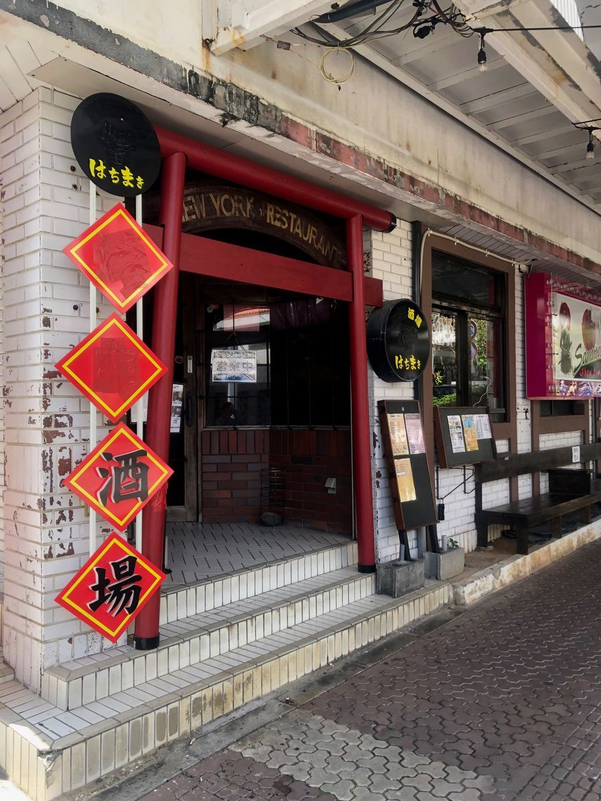
難怪會這樣，其實這家店晚上還會以「侍（Bar 侍）」之名營業成酒吧。看看旗幟，麵店「鉢巻」的營業時間是上午11:00～下午3:00與下午5:00～晚上10:00，而夜間的 Bar「侍」則是晚上10:00～上午5:00，真的是日夜擁有兩種面貌的店呢🍶
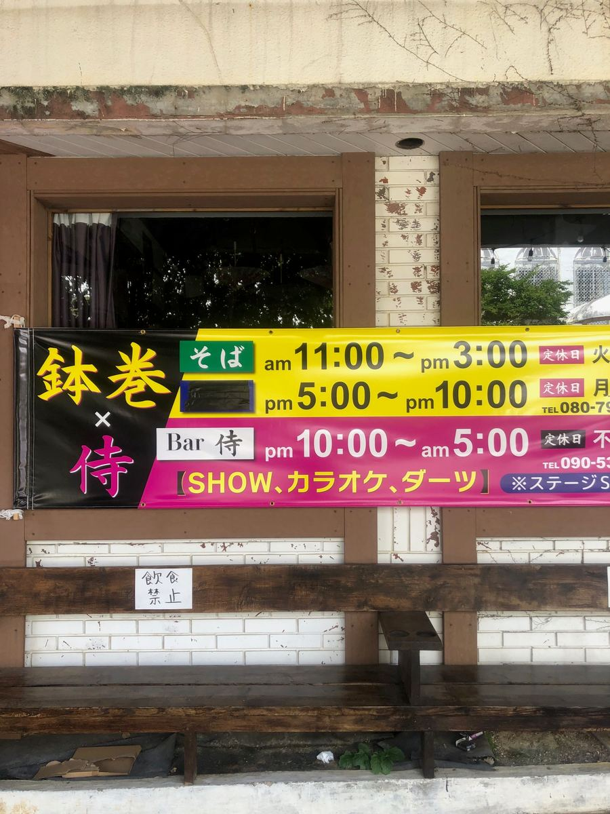
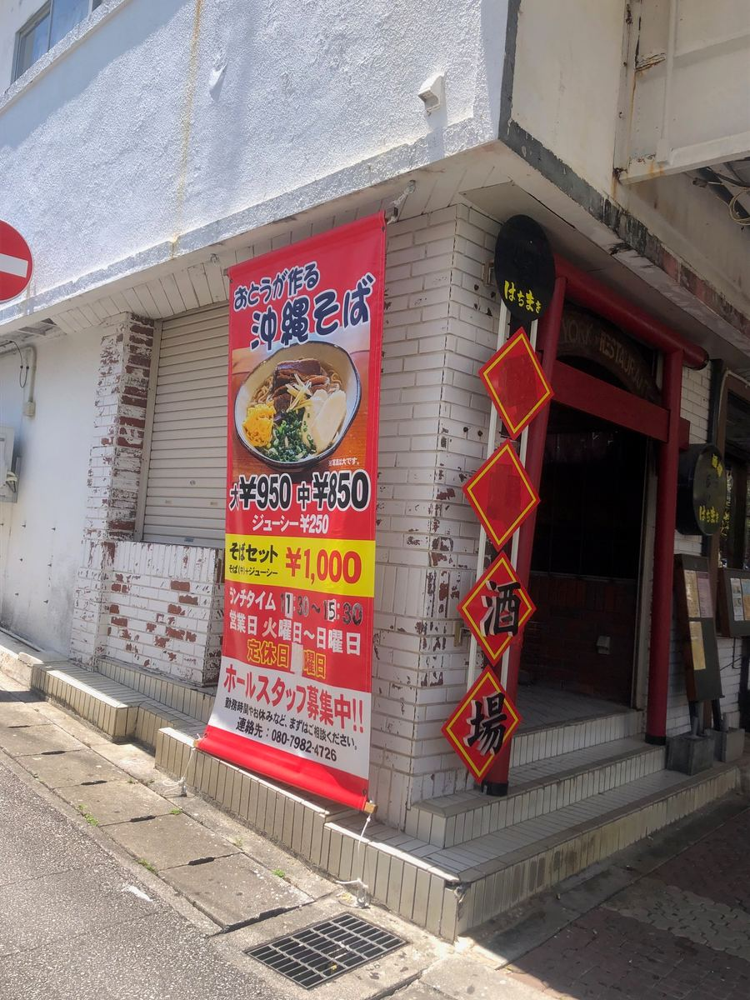
走進店內，同樣是很有酒吧風格的裝潢，鐵皮板牆上掛著描繪月夜武士的掛毯，還垂掛著紅色、粉紅色、綠色的燈籠，世界觀非常獨特。也有沙發座位，感覺比較像是來到夜晚營業的店，而不是白天的沖繩麵店😅 還貼著「平日限定卡拉OK，無限暢唱￥500」之類的告示，很能感受到這家店的本業是夜晚呢。
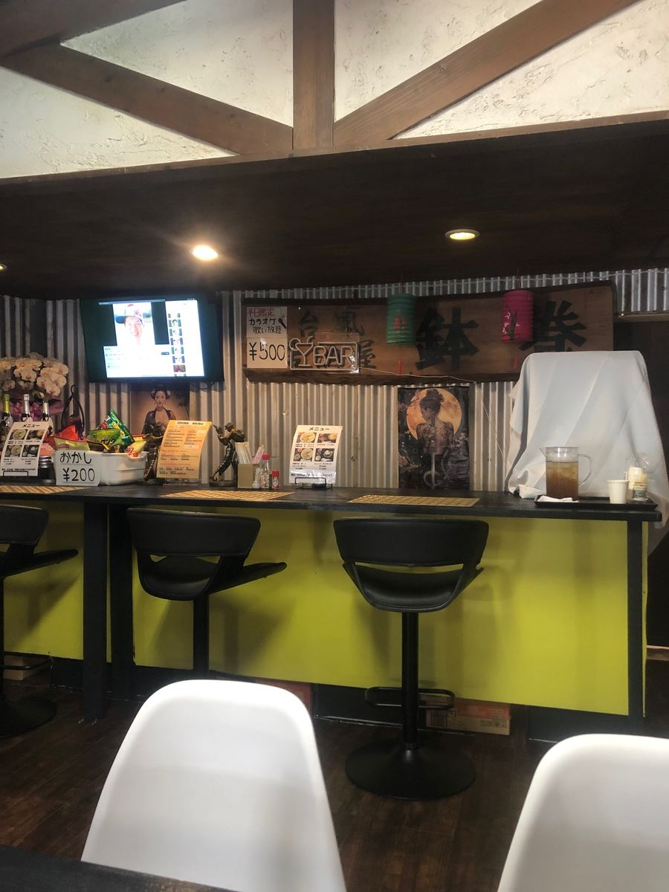
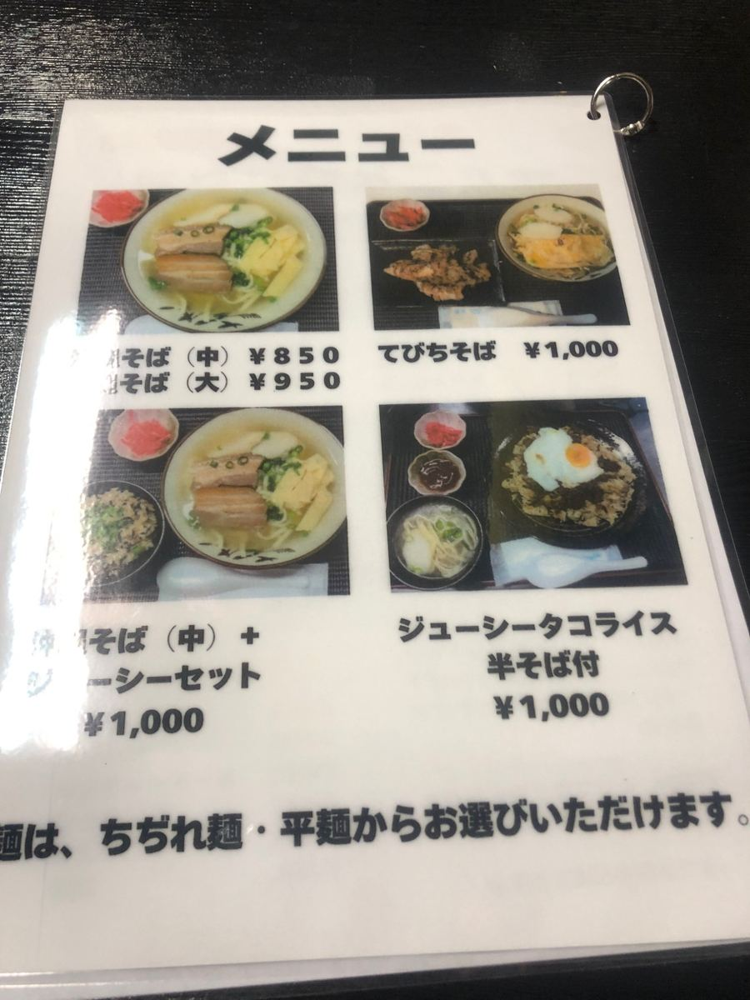
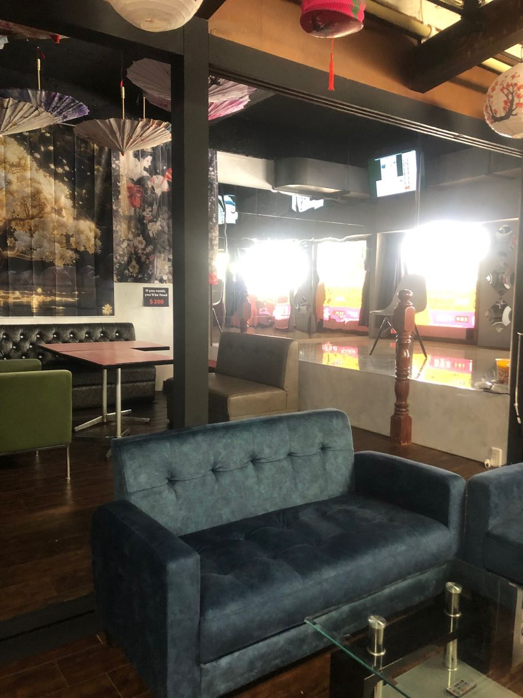
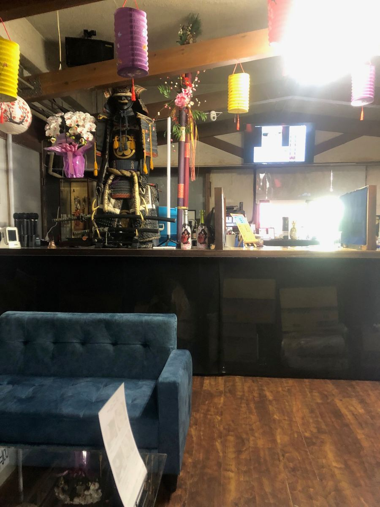
老實說，晚上也營業的沖繩麵店，可能是考慮到當作宵夜收尾的一碗，我的印象是味道通常偏重。所以原本以為這家也是那一類，結果以好的方式出乎我的意料。
那麼來看看菜單吧。沖繩麵（中）￥850、（大）￥950，豬腳麵￥1,000，還有搭配沖繩炊飯（Jushi）的套餐，以及沖繩炊飯塔可飯之類的。這次我選擇走正統路線，點了「沖繩麵（大）」🍜
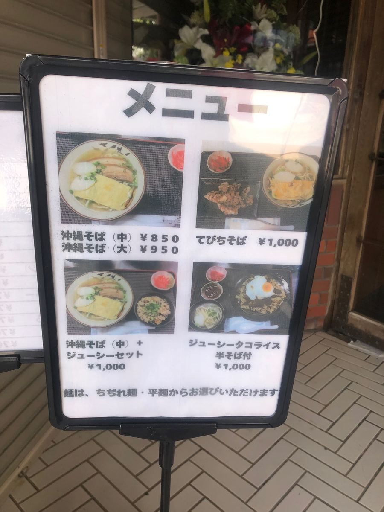
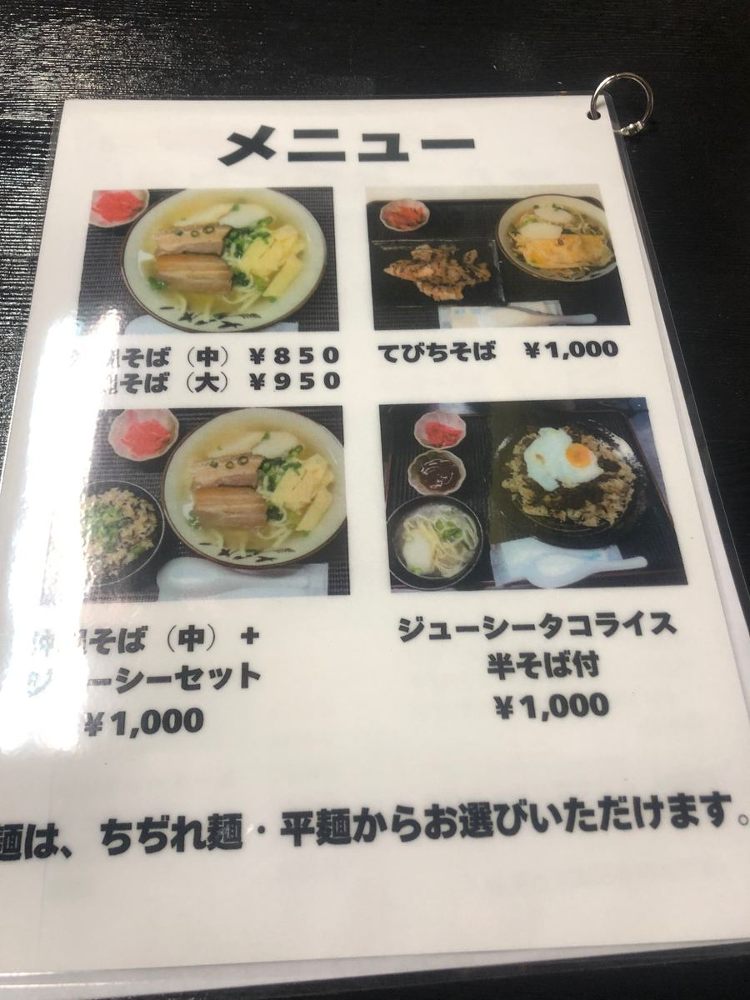
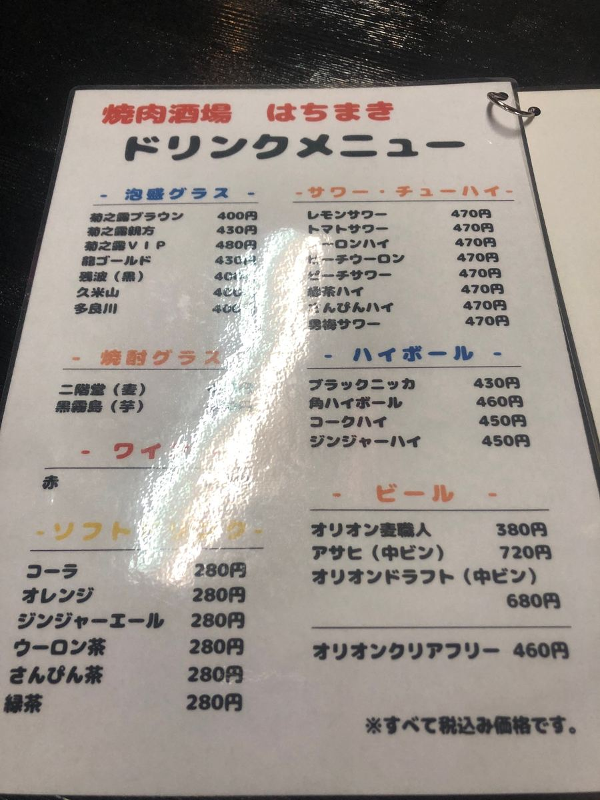
有趣的是，麵條可以從「捲麵」和「平麵」中選擇。難得有機會，我問了店員的推薦，對方推薦捲麵，所以我就老實地選了捲麵。
過了一會兒，沖繩麵（大）登場了！放著三層肉、蛋、魚板和蔥，外觀是非常標準的一碗😄
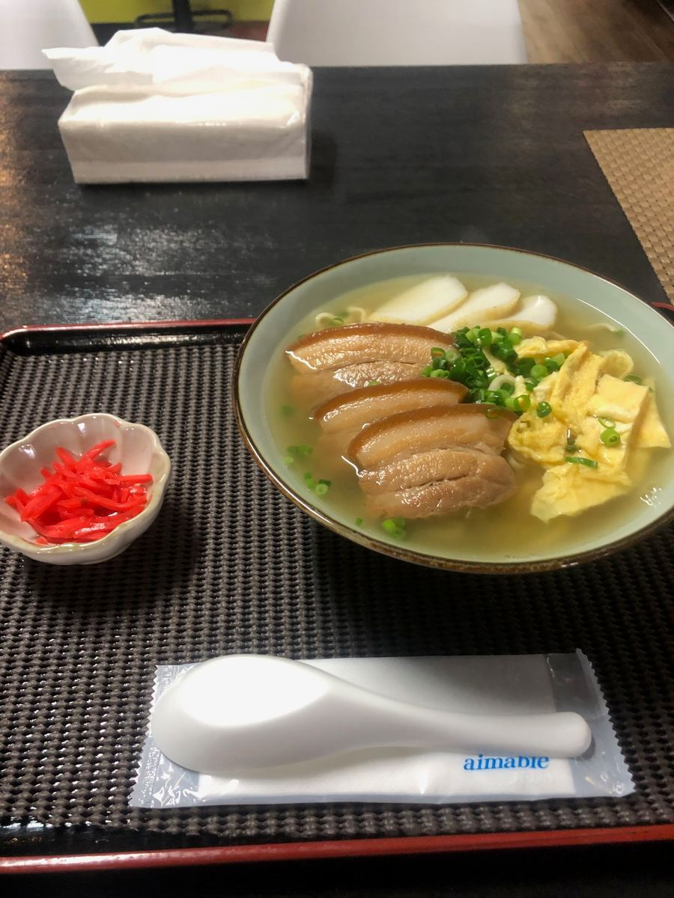
先從湯頭開始。嗯～這是豬骨基底的湯頭，但只有淡淡的豬骨味，味道非常溫和。因為這家晚上也營業，我原本做好了味道偏重的心理準備，所以這算是令人開心的意外。清爽好入口，咕嚕咕嚕就喝下去了。
接著吃麵。我選的捲麵相當少見喔。細的捲麵，我印象中在沖繩麵裡很少看到。而且煮得偏軟。因為湯頭溫和，這種細捲麵感覺很能吸附湯汁。
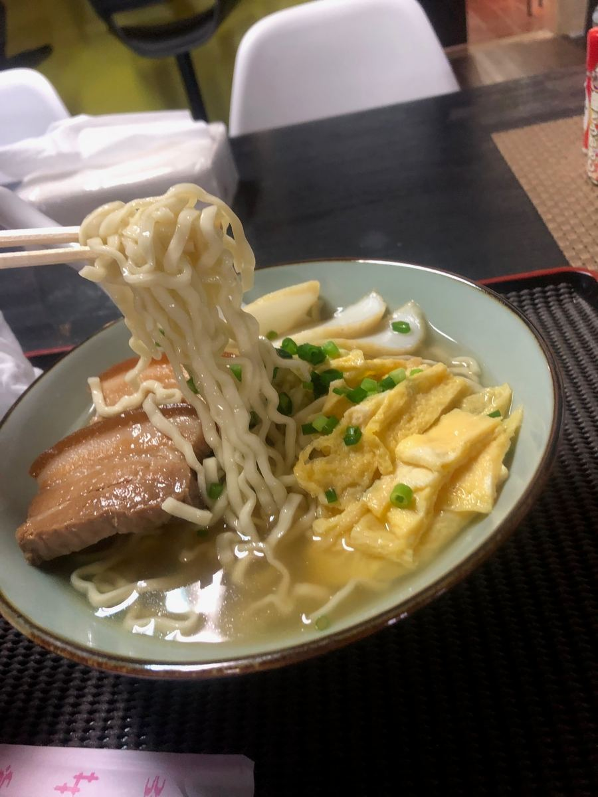
看看配料的三層肉，入味程度適中，感覺不錯。不過有些部分還是殘留了一點筋感。蛋和魚板則是一貫穩定的配角。
整體來看，「鉢巻」的沖繩麵與夜晚酒吧那種個性十足的外觀相反，是溫和清爽、以好的方式來說就是很普通的一碗。細捲麵的稀有感，算是個小小的發現😊
評分（9分/15分）：來 Koza 觀光時，可以順道體驗白天吃沖繩麵、晚上變酒吧這兩種面貌的「鉢巻（侍）」，大家要不要也來逛逛呢？👋
麵：★★★☆☆（3）
湯頭：★★★☆☆（3）
配料：★★★☆☆（3）